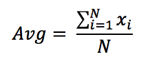
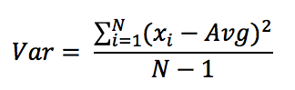

Chapter 11 - Arrays
Suppose we want to take N integers, xi, from the user and
We want to compute the average of these numbers, where

#include <stdio.h>
#define N 5
int main(){
float avg = 0,i;
int no;
for (i = 0; i < N; i++){
scanf("%d",&no);
avg += no;
}
avg /= N;
printf("average:%f\n",avg);
return 0;
}
We want to compute the variance of the numbers xi, where variance is

For this time, we need to keep xi values since first we need to compute the average value, then use this value in the variance computation.
- An array is a group of memory locations.
- These locations are related by the fact that they have all the same name and same type.
- To refer (access) to a particular location, i.e., an element within the array, specify the name of the array and the position number (index) of the variable in square brackets.
#include <stdio.h>
int main(){
return 0;
}
- We must declare arrays before using them.
int X[100];
float Y[90], Array[10];
#define b 3
const int mySize = 2;
int y[a*b+2];
float A[10];
A[3] = 2; /* assign 2 to the third element of the array A */
A[4] = A[3] * 2; /* get the value of the third element of the array A,
multiply it by 2, then assign the result into the
fourth element of the array A */
A[3]++; /* increment the value of the third element by 1 */
int k[5], i;
for (i = 0; i < 5; i++)
k[i] = i * 2;
k[2*2 - 1] = 3;
k[k[4] / k[1]] = 2;
k[1.5] = 3; /* error occurs */
It is also possible to initialize arrays at the declarations, give the values of elements in a comma separated list.
int n[4] = {1,2,3,4};
int n[4] = {1,2,3,4,5}; /* too many values (greater than the size of
the array), it gives compile time error */
int n[4] = {2,3}; /* fewer initializers, remaining elements are
initialized by zero */
int n[] = {1,2,5,3,7,7,0}; /* it works, the compiler will create an array
whose size equals to the number of the
initializers, in this case with size 7 */
int n[]; /* it gives compile time error*/
Arrays are static structures, which means you set the size of the array in your code and cannot change its size anymore. In summary you should either specify the array size or initialize the array.
Example: Suppose you have 100 elements with integer data type. You want to control whether these numbers are symmetric or not.
Consider elements are given in a sequence by the user.
#include <stdio.h>
int main(){
return 0;
}
Example: User enters a sequence of characters. You want to count the lowercase and the uppercase letters in this sequence. The sequence is finished when % is entered. You should ignore all other characters.
#include <stdio.h>
int main(){
return 0;
}
Arrays have one important drawback: They cannot be created or used dynamically.
- For example, consider the user enters a sequence of decimal numbers but we do not know the size of this sequence at the beginning of the program (suppose size is also given by the user or the numbers are taken until the user enters a sentinel value).
- We can solve this problem by defining very large arrays and hope the user not to enter the size such that it extends the limit. Suppose the following examples:
#include <stdio.h>
int main(){
return 0;
}
- If user enters the size smaller than or equal to 100000, the above code works. If he enters the size 100500, the indices exceeds the ranges, so you may have some problems.
- Now suppose the user enters 5 as the size of the array, then 99995 locations are allocated unnecessarily.
- Not that defining arrays with very large sizes is inefficient. So we need dynamic structures.
- For dynamic arrays, please refer to Advanced C Topics -> relationship between arrays and pointers dynamic memory allocation with malloc, calloc, and realloc.
Example: Suppose you want to write a program that takes two polynomials from the user. Perform addition and multiplication operations on them:
#include <stdio.h>
int main(){
return 0;
}